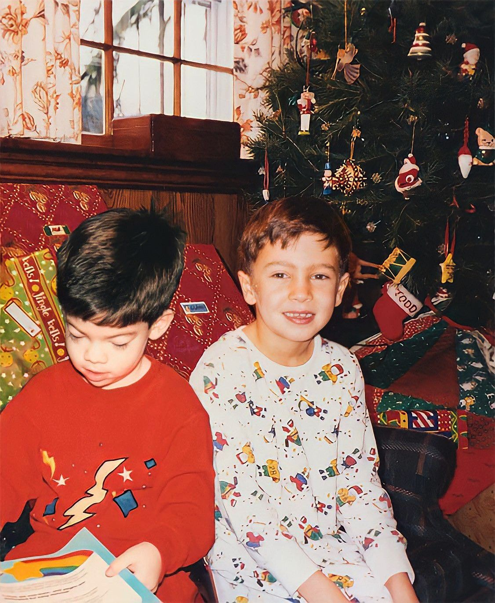
Exposición 1
Orígenes en Columbus
Historia de la banda (2009 a 2013)
Cómo nació Twenty One Pilots en Columbus, Ohio, en 2009, y cómo fue creciendo hasta el álbum Vessel (2013): primeros conciertos, discos y momentos clave.
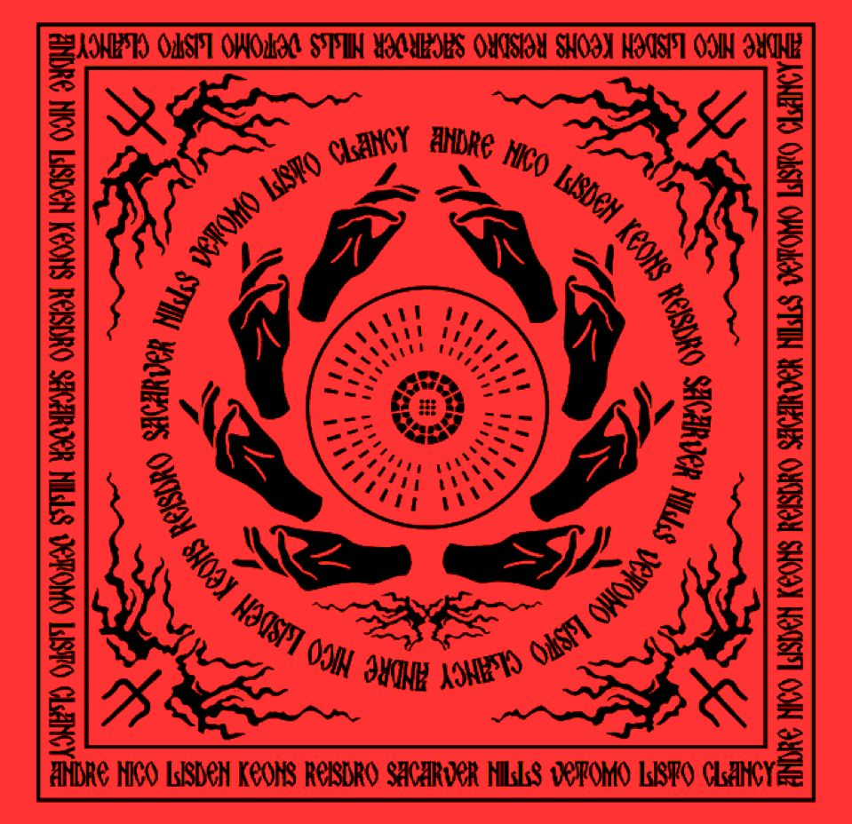
Museo ficticio
Un recorrido por la historia de Twenty One Pilots y por Dema, la ciudad ficticia de Trench: sus torres, su relión y sus personajes.

Exposición 1
Historia de la banda (2009 a 2013)
Cómo nació Twenty One Pilots en Columbus, Ohio, en 2009, y cómo fue creciendo hasta el álbum Vessel (2013): primeros conciertos, discos y momentos clave.
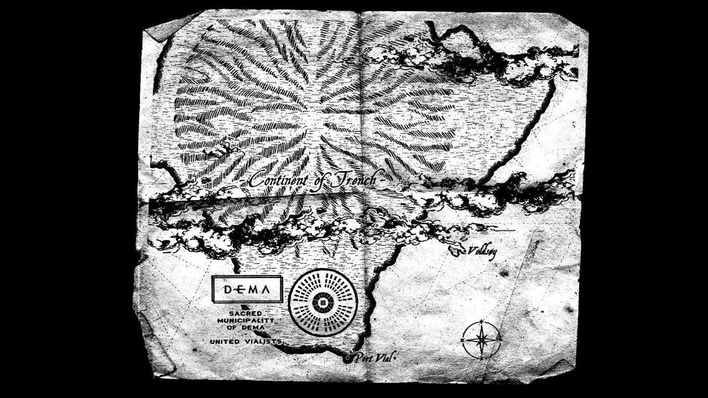
Exposición 2
Arquitectura y geografía de la ciudad
Mapas, maquetas y vistas de Dema, la ciudad ficticia que aparece con el álbum Trench (2018): sus torres, sus muros y el valle que la rodea.
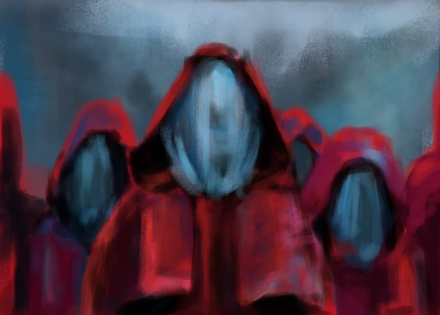
Exposición 3
Religión y gobierno de Dema
Cómo se organiza la vida en Dema: la fe vialista, el poder de los obispos y el significado del color amarillo.
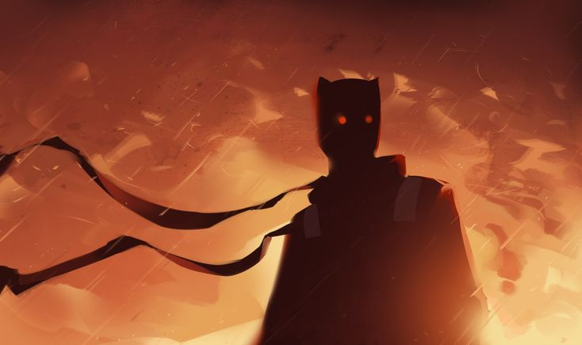
Exposición 4
Personaje y narrativa (Trench a Clancy)
La historia de Clancy, el personaje que cuenta la historia, desde su vida en Dema y su escape en Trench hasta el álbum Clancy (2024).
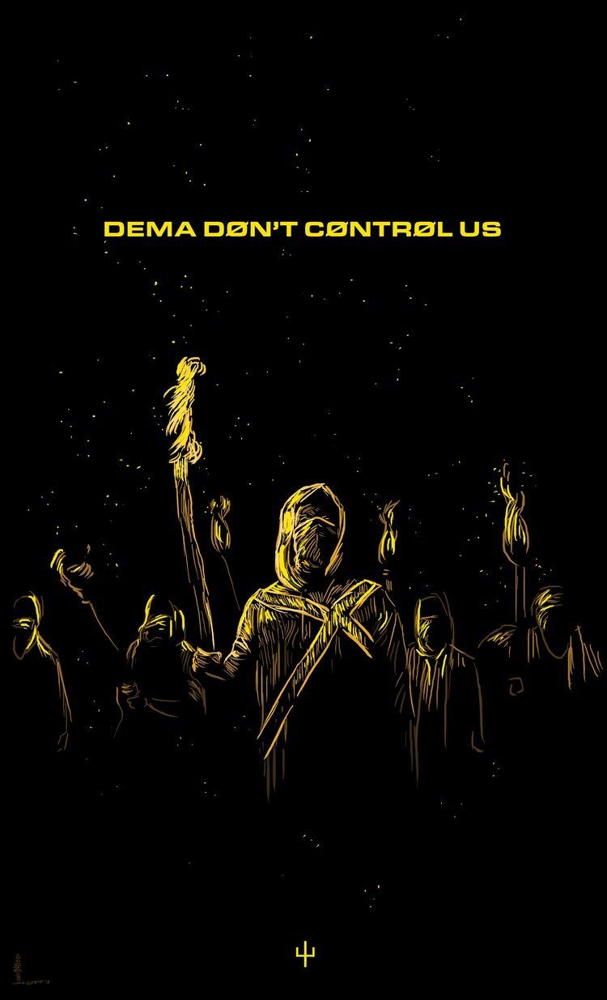
Exposición 5
Fans, conciertos y cultura
El papel de los Banditos, la comunidad de fans que ha acompañado a la banda y la historia de Dema desde los conciertos y los giras.
Piezas de la exposición Orígenes en Columbus.
Piezas de la exposición La Ciudad de Dema.
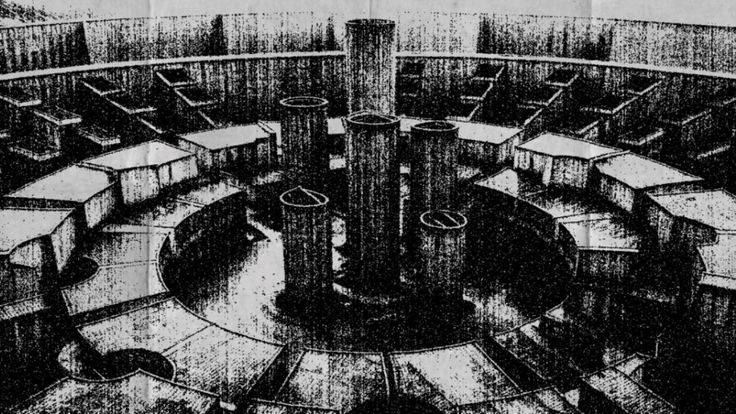
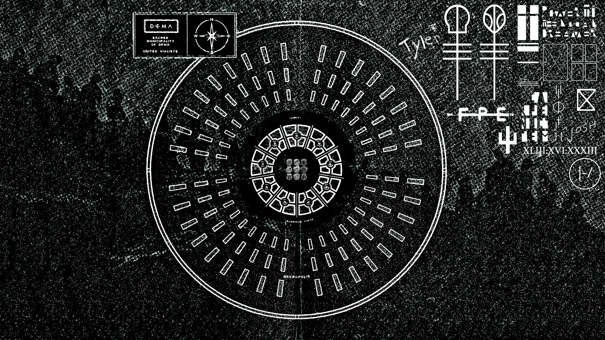
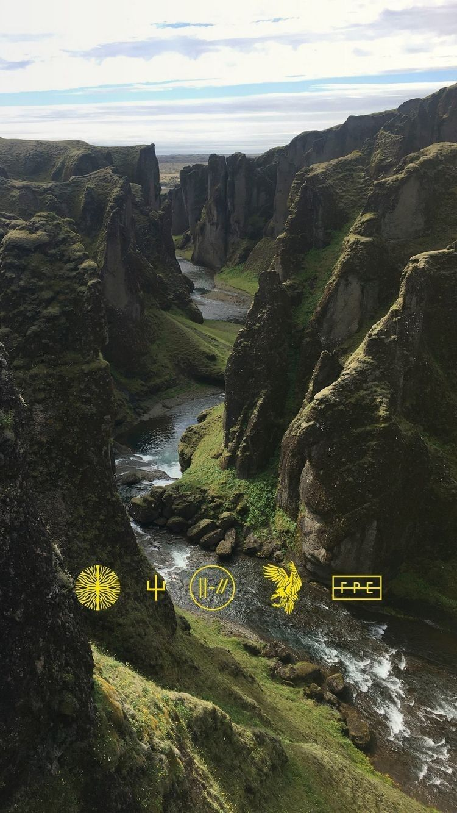
Piezas de la exposición Vialismo y los Obispos.
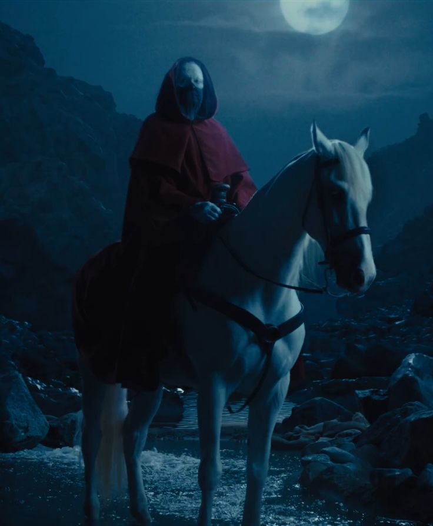
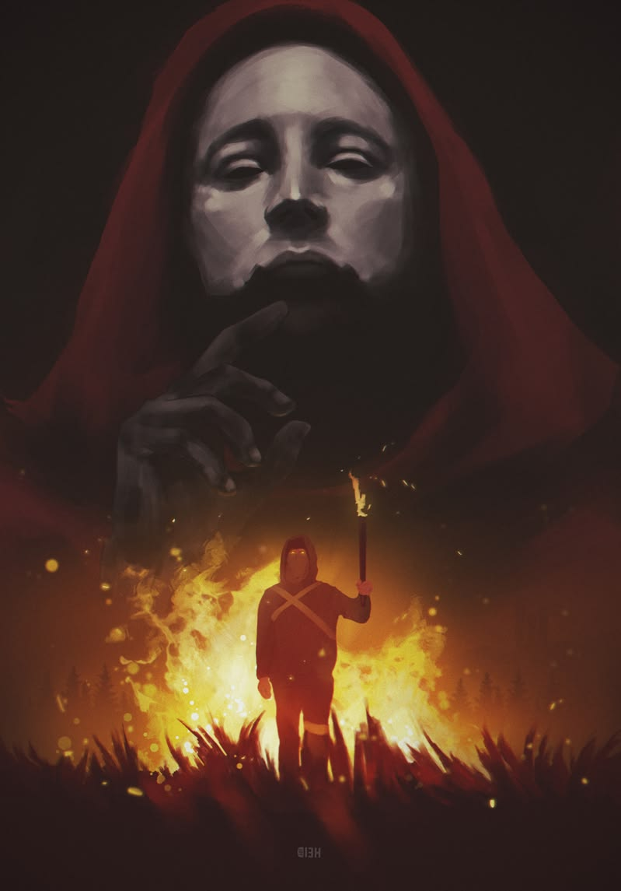
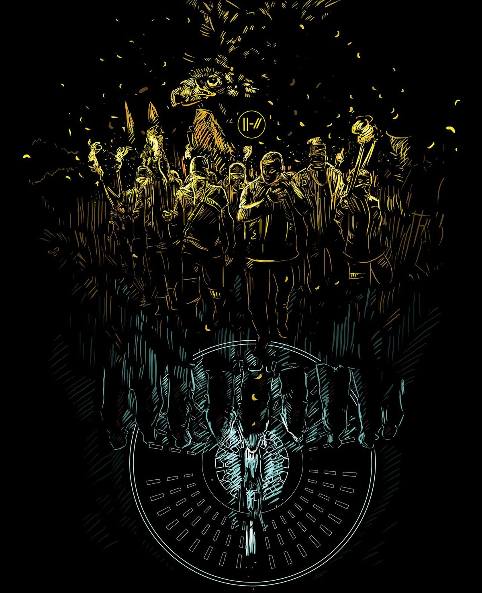
Piezas de la exposición Clancy y el escape.
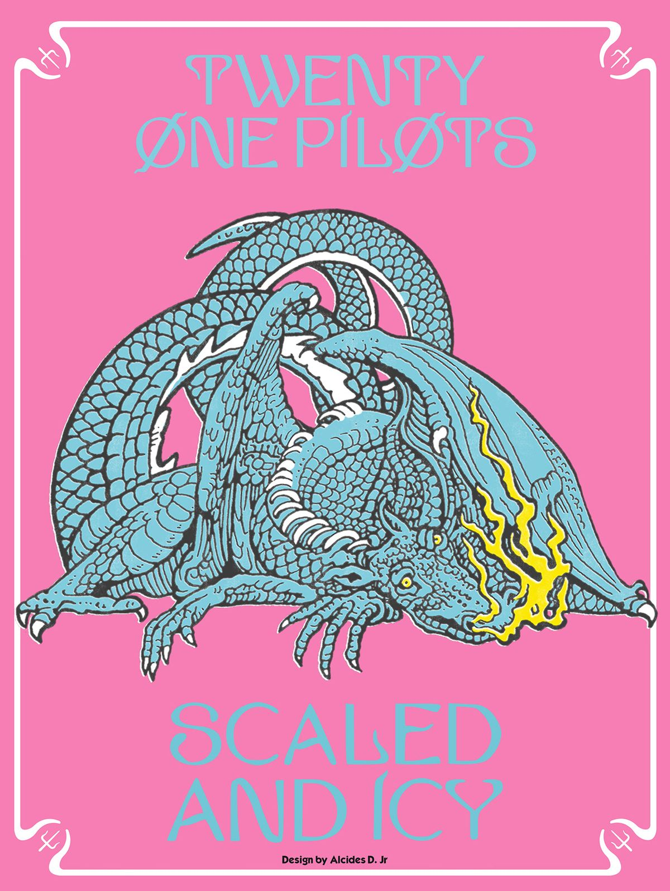
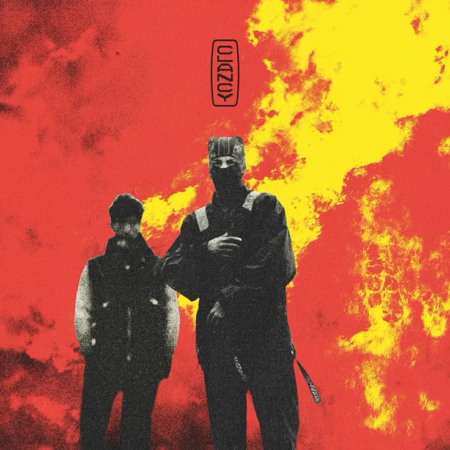
Piezas de la exposición Los Banditos y la comunidad.
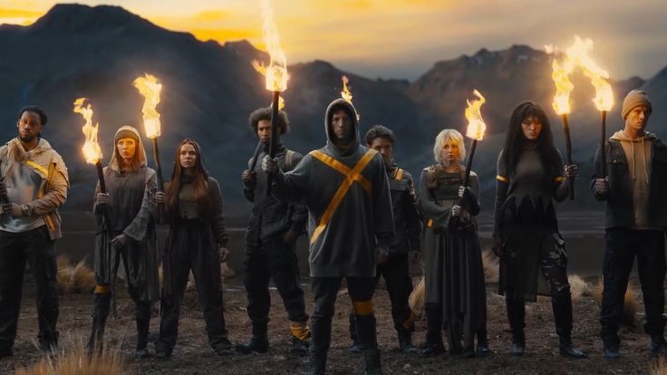
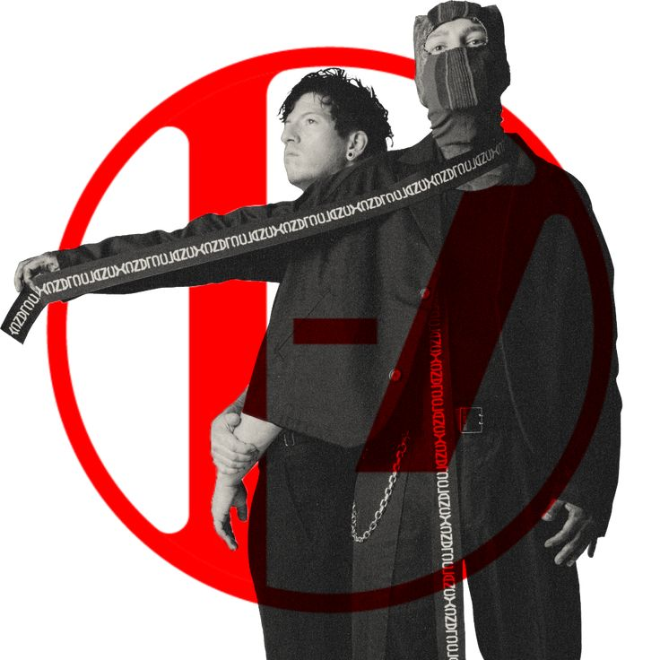
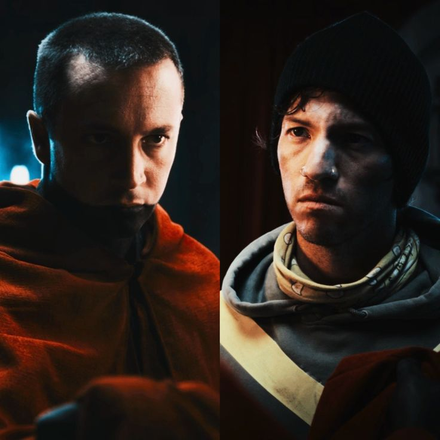
Información para la visita
| Día | Horario |
|---|---|
| Lunes | Cerrado |
| Martes a viernes | 10:00 a 18:00 |
| Sábado y domingo | 10:00 a 20:00 |
| Días festivos | Cerrado |
Dirección: Nos ubicamos en la parte inferior del continente salvaje y verde de Trench, Municipio de Coal, Ohio 43766, EE.UU.
Cómo llegar:A unos metros del Bosque Nacional Wayne.
| Categoría | Aplica a | Costo |
|---|---|---|
| General | Público en general | $120 MXN |
| Estudiantes | Con credencial vigente | $60 MXN |
| Adultos mayores | Mayores de 60 años con identificación | $60 MXN |
| Niñas y niños | Menores de 6 años | Gratis |